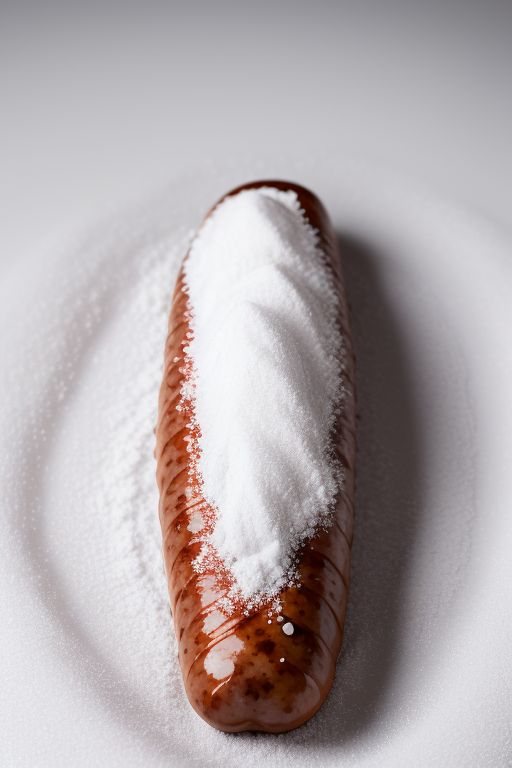
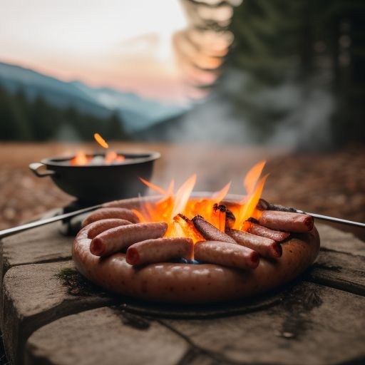
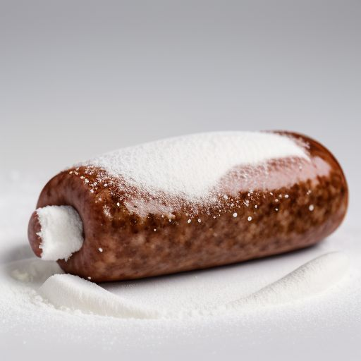
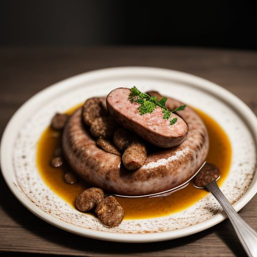

KLOBÁSA UZENÁ
O MĚ

Když jsem poprvé ochutnal tuhle klobásu, věděl jsem, že už nikdy v životě nezažiju nic lepšího. Je to čistá dokonalost, symfonie chutí, mistrovské dílo, které překonává hranice kulinářského umění.

Nejdřív se do mě opře ten omamný kouř bukového dřeva – hluboký, tajemný, naprosto neodolatelný. Pak přijde první sousto… a já mám pocit, že se mi v ústech rozplývá samotná esence radosti. Maso je šťavnaté, koření dokonale vyvážené a ta tajná složka? Ta mě vystřelí do jiné dimenze. S každým kousnutím cítím, jak se mi tělem šíří nepopsatelná vlna euforie, jemná, ale intenzivní, jako když se celý svět najednou stane krásnějším místem.

A ta textura! Každé sousto je kombinací jemné masité vláčnosti a dokonale křupavé, lehce zauzené kůrky. Nic není příliš slané, nic nepřebíjí ostatní chutě – je to naprostá harmonie. Každá klobása je zázrak, každý kousek je požitek.

A ten závěr? Sladce kouřová dochuť, která mi zůstává na jazyku, zatímco se mi v hlavě rozeznívá vikingská píseň dávných hrdinů. V tu chvíli chápu, proč ji jedli po dlouhých bitvách – tahle klobása vás uzdraví, povzbudí a dá vám sílu dobýt svět.
Jestli existuje něco, co definuje pravý smysl života, je to tahle klobása.